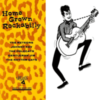

VA - Home Grown Rockabilly (Compilation, 1980)
the Meteors:
01 - Crazy Love (2:03)
Johnny Key with the Kool Kats:
02 - London Is My Hillbilly Home (3:24)
the Rhythm Cats:
03 - Rockin' This Joint Tonite (3:00)
Gentleman Jim Mealey:
04 - Hi Ho Fiddle Dee Dee (2:55)
the Rhythm Cats:
05 - I'm On My Way (2:31)
Gentleman Jim Mealey:
06 - Tears Fallin' Down Down Like Rain (2:52)
the Meteors:
07 - Go Away (2:27)
the Rhythm Cats:
08 - Move Over Baby (2:39)
the Polecats:
09 - Rockin' All Nite (2:27)
Gentleman Jim Mealey:
10 - Little Confused (2:30)
the Meteors:
11 - My Baby Loves Me (Yes She Does) (3:02)
the Rhythm Cats:
12 - My Baby's Gone (3:20)
Gentleman Jim Mealey:
13 - Second Hand Information (3:03)
Johnny Key with the Kool Kats:
14 - Fallin' For You (2:46)
Gentleman Jim Mealey:
15 - I'd Find You (2:46)
Johnny Key with the Kool Kats:
16 - Keep My Big Wheels Turnin' (2:52)
17 - Make You Realise (2:48)
Gina and the Rockin' Rebels:
18 - Rockin' On Down The Line (2:25)
19 - Thinkin' On You (2:03)
Johnny Key with the Kool Kats:
20 - Hillbilly Music (2:24)
© Alligator Records :: [ALL LP 001] © Nervous Records :: [NERCD 053]
Notes
United Kingdom.
My experience is based on its re-release on Nervous Records (1992) and its Digital release
reference information: Discogs®
Review
245/366 (Project 366)
Just a well-chosen title for the compilation. And even more significant, the sound of songs itself is very homey, comfy, pleasant, familiar, spirited and awakens feelings. The lyrics and arrangements are saturated with a common and general understanding of the style, but also filled with their own interpretation with the content of extremely undeniably attractive components. Which, in general, can be characteristic of Rockabilly Revival (and Rock'n'Roll). Basically, it is possible to write that there are excellent streams of a rustic vibe, countrified tunes, dancing courage, traditional kernel and sometimes a more psycho wild approach. But always very very stylish, mostly rockin' and rollin', without exaggeration into an inexplicable riot.
A very tasty dish consisting of somewhat revival and authentic moods, rockabilly, (neo) approach, hillbilly, country boppin', punky tones, folk, hot rollin', rockin' appetizers and wild snacks. The tracklist's features include: the Meteors with a sweet blend of rather classic rockabilly, rebel drive and hillbilly boogie with touches of acoustically fine folk vibe and countrified rave; indescribably charming female vocals and the general atmosphere of the songs of Gina and the Rockin' Rebels; song "London Is My Hillbilly Home" by Johnny Key and the Kool Kats with very pretentious lyrics, but yeah.. sounds true, sounds heartful, sounds good!
No-frills tunes, but very strong atmosphere crafted. Most of the compositions are in a well-combined form with each other, but there are also exceptional tracks that are exhilarating more. From a musical point of view, everything is very enthusiastic, vividly and cool. That particular release of "Home Grown Rockabilly" also ends with a remarkable song "Hillbilly Music".